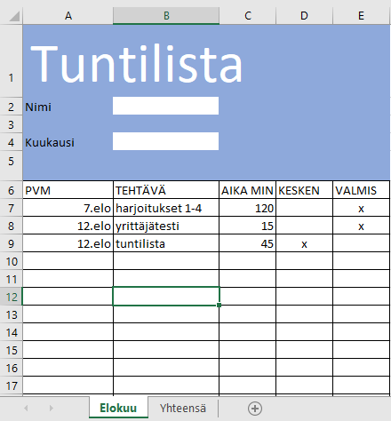
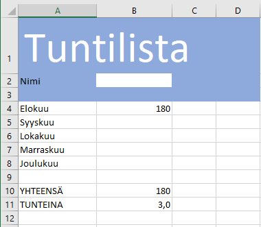

Tuntilistojen avuilla seurataan työpaikoilla töiden etenemistä ja ajankäyttöä. Tuntilistojen tietoja käytetään palkanmaksun perusteena sekä projektien suunnittelussa ja seurannassa. Usein asiantuntijayrirtyksissä tuntiseurantajärjestelmä on ainoa muodollinen johtamisjärjestelmä. Yrityksillä on toki usein käytössään toiminnanohjausjärjestelmiä, jotka yhtenä toimintonaan huolehtivat tuntiseurannasta.
Laadi tehtävien ja ajankäytön seurantaan tuntilista, johon merkitset päivämäärän, käytetyn ajan puolen tunnin tarkkuudella, tehdyn tehtävän tai toiminnon. Tuntilistan laatiminen ja jatkuva täyttäminen ovat edellytys opintojakson suorittamiselle.

